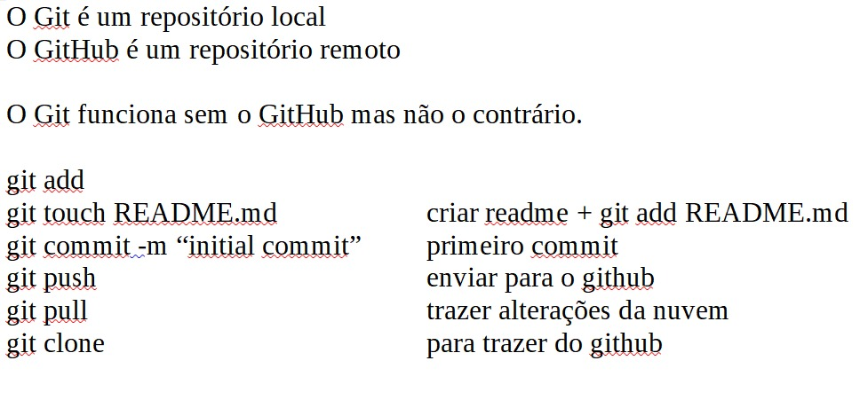
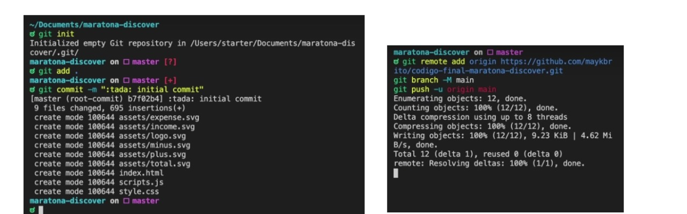
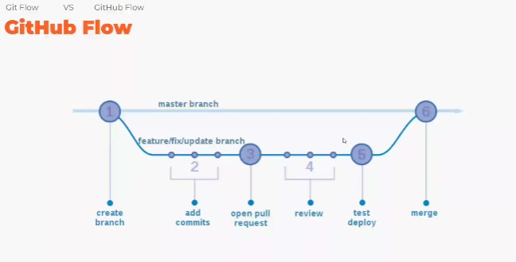
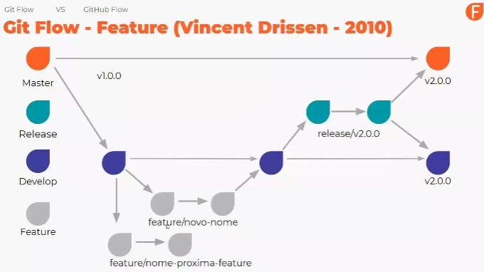
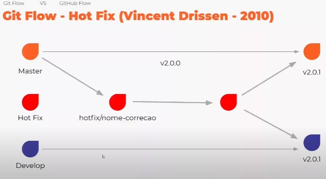

1. O que é Git? O que é versionamento?
Git - Software de Controle de Versionamento compartilhado, mas pode ser usado para registrar o histórico de edições de qualquer tipo de arquivo
GitHub - Plataforma de Rede Social para Programadores
VCS Sistema (Software) de controle de versão ou versionamento de softawe (de código)
Exemplo de versionamento, quando no GitHub deixamos várias versões da mesma coisa. Quando comitamos(commit) não precisamos criar vários zips
Para distribuição, primeiro a equipe faz um commit para repositório local(git) e depois faz um push para repositório remoto central(GitHub)
Principais Vantagens:
- Controle de histórico
- Trabalho de equipe
- Ramificação do projeto
- Segurança
- Organização
2. O que é GitHub? Pra que ele serve?
"É um repositório onde você pode jogar os seus arquivos."
o github (palavra que seria traduzida como "agregador de gits") é o site mais conhecido de hospedagem de projetos git. ele serve para que você e sua equipe possam manter as versões do projeto em que trabalham em um lugar centralizado, na internet, acessível a quem pertence ao projeto.
- Repositórios ilimitados
- Hospedagem de código-fonte
- Características de rede social
- GitHub Pages integrado
- Colaboração
- Forks
3. A Evolução do Git e GitHub.
1985 CVS | 2000 SVN | 2000 BitKeeper | 2004/05 BitKeeper nova licença | 2005 Git
O que quer dizer Git? Global information tracker
2008 GitHub | 2018 -adquirida pela Microsoft
2020 GitHub comprou a npm (gestor depacotes JavaScript feito em node.js)
4. Instalações e configurações importantes
5. Criando o primeiro Repositório
Através do Terminal
Utilizando o GitHub Desktop
Assitir vídeo6. Instalando GitHub Desktop no Linux
Assitir vídeo8. Versionando seus projetos antigos
Assitir vídeoExemplos de fluxos para versionamento:
  10. Guia da Linguagem Markdown
** ** ou __ __ = negrito
* * ou _ _ = itálico
~~ ~~ = riscar a palavra
# título = h1 e ## título = h2...
--- ou *** = linha abaixo do texto
para lista só enumerar(1234...) ou colocar *(pontinho) ou []/[x](checklist) e para subitem da 3 espaços
`` - para colocar comandos
``` [aqui coloca o código] ```
para fazer tabela ver imagem
para emojis - :[nome do emoji]
11. Seu GitHub muito mmais seguro
Assitir vídeo12. Git Branches de forma fácil
Branch (ramificações, lembra de árvore)
A Branch master é o ramo principal.
Podemos criar várias branches e optrar qual vai ser conectada a branch master ou não.
Dicas para criar e trabalhar com branch:
git branch = amostra as branchs
git chekout -b = cria a branch
git checkout master = seleciona a branch que vai entrar
git diff = amostra o que foi alterado
para dar push:git push origin (NOME da branch)
git pull origin (NOME da branch) = você escolhe qual branch quer pegar pra você dar continuidade ao trabalho
git tag serve para dar nome a hash
Utilizamos a git tag porque é mais fácil gravar e entender o sentido de um nome do que de uma sequencia de caracteres git merge = é o jeito do Git de unificar um histórico bifurcado. O comando git merge permite que você pegue as linhas de desenvolvimento independentes criadas pelo git branch e as integre em um único branch.